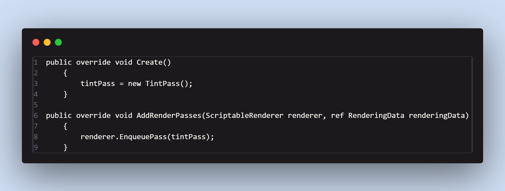
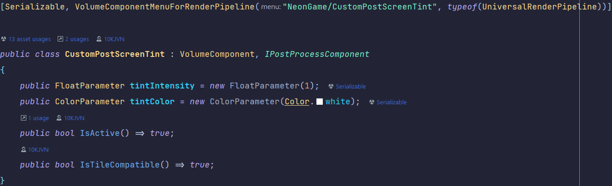
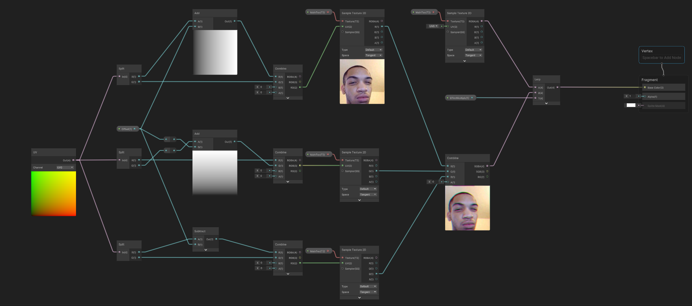
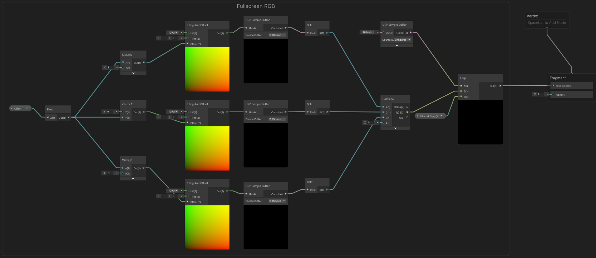

Universal Render Pipeline (URP)
Project Status: Finished
Project Type: Solo specialization
Software: Unity (URP)
Languages: C#, HLSL
About this project
For this elective I had 8 weeks to choose a tool and specialize in it. Since I had recently worked with shaders, I decided to dive deeper into Unity’s Universal Render Pipeline (URP) and learn how to extend it with custom effects.
Source code is available here: GitHub You can also view my retro-styled pitch slides: Presentation.
Features implemented
- Custom URP Volume Override system
- Screen Tint (color & intensity controls)
- Fullscreen Chromatic Aberration
- Object-level Chromatic Aberration (UV-space)
Intro
The assignment was connected to Operation Starfall. One user story asked for the game to feel like watching an 80’s NTSC TV. That became my focus: building a shader-driven retro visual style using URP features.
Development
To extend URP, I created custom renderer features and volume overrides. For example:
Custom renderer pass setup:

Creating and enqueuing a custom TintPass in URP.
Volume override in Inspector:

Added float & color parameters with toggles for on/off control.
Early experiments

Shader Graph prototype: RGB channel offset for chromatic aberration effect.
Fullscreen chromatic aberration

Final implementation: RGB channels split with a customizable offset, applied to the entire screen.
Results


Left: Object-contained UV-space aberration. Right: Fullscreen aberration effect with adjustable strength.
Conclusion
This project taught me how URP’s renderer features, passes, and volume overrides work together. I learned not only how to write custom HLSL effects, but also how to integrate them cleanly into Unity’s pipeline. I also discovered the importance of debugging pipeline setup — my tint shader was “broken” for two weeks simply because I hadn’t added the renderer feature to the renderer.
Overall, this deepened both my shader programming and technical art integration skills, and gave me practical experience in extending URP for stylized effects.
Next steps
After the 8-week period, I continued experimenting with rendering settings and RGB offset shaders. This exploration is ongoing and may evolve into future personal R&D projects.